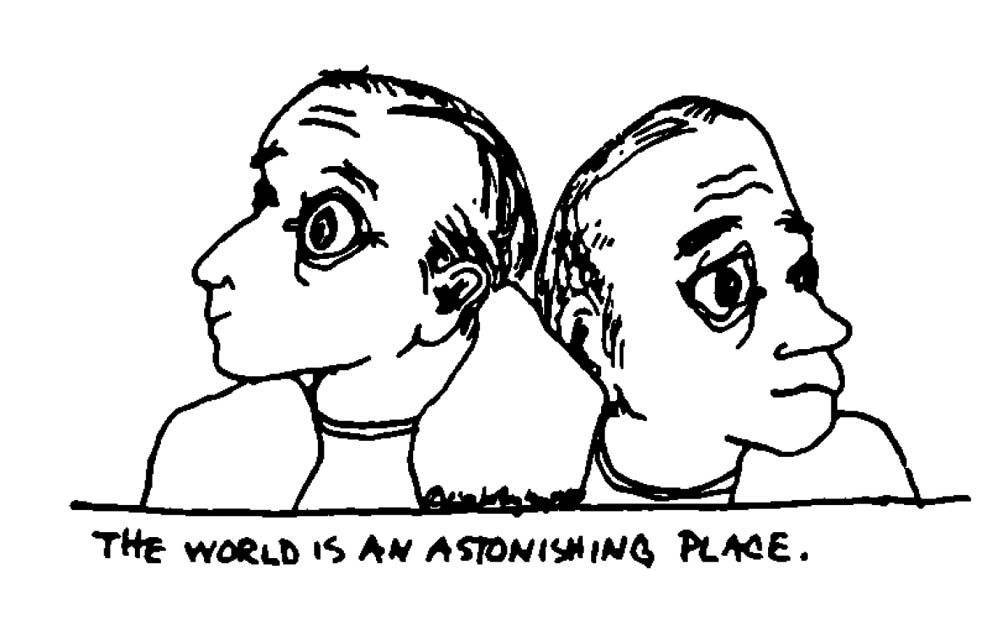

Dreambodywork is a comprehensive therapeutic process developed by Arnold Mindell, a Jungian analyst, researcher and author who lectures at the C. G. Jung Institute in Zurich, Switzerland. Dr. Mindell is an American who has lived in Zurich for twenty years. He travels periodically to the United States conducting seminars in dreambodywork This article grew out of a four day seminar held in Eugene, Oregon in August, 1982.
One of the most significant and exciting frontiers in contemporary psychology is the continuing discovery and exploration of the mind-body unity. The dreambodywork of Dr. Arnold Mindell holds one or the leading edges in this area of research and practice. Just as dreams reveal to us in images and feelings those parts of our personality which are unconscious; in dreambodywork, bodily conditions and diseases are viewed as processes through which the unconscious expresses itself in a most graphic manner. Dreambodywork consists in using the body (sensations, posture, symptoms) as a source of information about the unconscious mind. The primary method of working with the dreambody is to allow the symptoms of conditions of the body to speak for themselves by amplifying or exaggerating them. Then through dialogue and an exploration of the felt experience of the body, the meaning of the body condition emerges. Seeing the body as an expression of the unconscious mind beings immediacy and a remarkable quality of aliveness to the therapeutic process. Dreams are of ten remembered spontaneously during the course of the session, lending weight to Mindell's notion that the body dreams. In this model of mind-body consciousness, awareness of pain, the felt experience of disease, posture and energy level reveals that right now your body is having a dream. Years of research into the human energy systems of other cultures (Tibetan, Chinese, Indian) have resulted in Mindell's hypothesis of the dreambody.
During the seminar in Eugene, four people each day underwent intense individual sessions in the group setting. The process usually proceeds from a report of a body condition, a dream or a relationship issue. Dr. Mindell listens to the client presenting his or her story from across the room. He is awaiting a body signal which invites him to make closer contact with the individual. This acute focus on the non-verbal aspects of behavior is one of the main characteristics of this process-oriented work and Dr. Mindell's own therapeutic style. Once close physical proximity has been established, he begins to draw out information by exploring both conscious and unconscious communication. For example, a woman at the seminar who told of an abdominal problem (spastic colitis) used her hands to demonstrate the feeling in her body. As she began to make grabbing gestures, Dr. Mindell engaged with her:
"What is that hand doing? Do that some more. Really let that hand go. Go ahead, grab the air. What are you grabbing for?"
In the discussion that followed, they discovered that she was trying to hold onto feelings which were present in a relationship that had outwardly been over for many years. She spoke of having never reached comparable levels of closeness with any partner since that time. The woman told of having gone from city to city distracting herself from the pain of this loss.
DREAM EMERGES SPONTANEOUSLY
Two important elements of process dreambodywork were evident in this session. An unfinished, unexpressed psychic content (the feelings of holding on to the relationship) manifested in the body as a colon problem. Also, in this process, a dream came to awareness spontaneously as the work evolved. In her dream she was climbing through huge worm tunnels with her boyfriend. As they visited friends in several rooms in the tunnels, he would disappear, and she immediately felt distraught at the loss of his presence. Dr. Mindell suggested that the worm tunnels might indicate how the two of them were together in her colon problem. This seemed to strike a meaningful chord. As with all effective dreamwork, it is the response from the dreamer which determines whether or not in interpretation is useful. The degree to which Dr. Mindell's idea hit the mark for this dreamer became clear as she began speaking of how the onset of her physical symptoms corresponded to the time of the relationship break-up six years before.
How can one make use of these discoveries about the mind-body continuum? Dr. Mindell's message advises that by bringing more of ourselves into our relationships, that is by expressing and communicating our needs and feelings, we diminish the need for our body to express our unconscious mind in symptoms and diseases. for those already convinced of the value of paying attention to dreams, listening to the dreambody is the next step in developing even greater self-awareness. Great flexibility of format characterizes dreambodywork in the course of the four day seminar, processes resembling each of the following therapies were employed: Gestalt, bioenergetics, art, dance, movement, psychodrama, role playing, martial, arts, yogic breathing and active imagination. All of the participants had the opportunity to go deeply into the central issues of their lives because of the flexibility inherent in the approach, and the immediacy with which Dr. Mindell follows the individual's process.
TAO UNDERLIES PROCESS WORK
To accurately follow an individual's process (of perception-expression, blockage-release) requires an open, unbiased attitude on the part of the practitioner. Mindell sees the Chinese concept of the Tao as the archetypal structure behind his emerging model. Following the Tao means allowing for rhythms of change, and requires the ability to respond flexibly as natural processes unfold and take their winding course of development. The Tao reminds us to be with whatever is, as it is unfolding. In this light, it is the most accurate model for dreambodywork.
While the Taoist viewpoint provides a philosophical model for this approach to therapy, the work is also grounded in psychological theory and experience. Several theoretical considerations were discussed in conversations I held with Joe Goodbread, a student and colleague of Mindell's who was participating in the seminar. He outlined a framework for understanding the important features of dreambodywork.
Using bodywork in addition to dreams gives one the opportunity to observe and work with where the unconscious is in the moment instead of where it was when the dreamer had the dream.
By following the actual process going on in the individual, one uses the form of therapy demanded by the process itself, not by a predetermined therapeutic program
following the emerging process forces the therapist to have a research orientation. One must constantly be asking questions and revising one's model in response to new observations.
If one follows the process consistently, one is forced to bring one's own experience into the work. The practitioner effectively engaged in process work cannot hide behind a therapeutic model or persona.
Personal as well as professional uses can be found for those intrigued by the dreambody concept of Arnold Mindell. Great potential lies in the widespread understanding and application of the basic ideas governing this approach to self knowledge. Dreambodywork teaches that body symptoms and conditions are signs of unconscious contents (often feelings) that have not yet arrived in our awareness. As with dreams, in which attitudes of feelings we haven't acknowledged become expressed as stories and images, the body also portrays parts of our total nature we have not accepted. Body difficulties, says Dr. Mindell, give us just the piece of information we need to see ourselves more clearly. For this reason he suggests that being sick is like having a big dream. Mindell believes that body and dream phenomena are like mirror images of one another. He has found in working with people for over ten years that when one begins to become the person one has been suppressing (through help in therapy), the symptoms and conditions diminish or disappear. They are no longer needed to express the suppressed part of the personality. It is important to note that these results follow from an attitude of first appreciating and accepting the disease or symptom for what it is. One asks oneself: What is the body doing and saying on its own to reveal the self? Instead of subjecting the body to a prescribed regimen of moves or manipulations designed to break down of through character structure, Mindell sensitively follows Jung's notion of looking at what is already the case, assuming it has a purpose and a meaning. This purposive view of human behavior and mind-body functioning is one of the hallmarks of the Jungian school.
How does one apply this notion that the body is a rich source of information about the unconscious mind I tested the applicability of dreambodywork as soon as I returned from the seminar. During a therapy session, one of my clients understandably expressed fear and caution about coming into contact with deeply buried feelings. As she spoke, she sat with crossed legs, her arms holding her knees in a contracting, protective position. I. asked her to amplify of exaggerate her posture, to allow it to go further, wherever necessary, to express itself. She then lay down and curled up saying, "I want to hide." Encouraging the 'hider', I asked her after a pause to say what she was aware of internally. Immediately she stated, "I've been dreaming about this. In my dream, me and Bobby (brother) were hiding in the attic of a warehouse. We were safe there." This example duplicated a phenomenon I observed several times in the dreambodywork seminar. The posture of bodywork anticipated a drean, and the individual would spontaneously remember the dream, while engaged in exploring the awareness accompanying the body position.
While working in the group setting, Dr. Mindell proved to be a remarkable example of spontaneity and human freedom. He was playful and childlike, humorous and extremely movement oriented in his work with clients. The range of motion in both his voice and body brought an aliveness to the seminar, which was both freeing and fun for the entire group. He is saying to the world through his work: Let us continue to search, to look deeply at the human condition by looking deeply at ourselves. The power of the work he is doing on the edge of the mind-body frontier is but hinted at in this report. It is my hope that we will be hearing more from this energetic researcher, who encourages us to awaken our dreaming bodies and live as consciously as possible.
